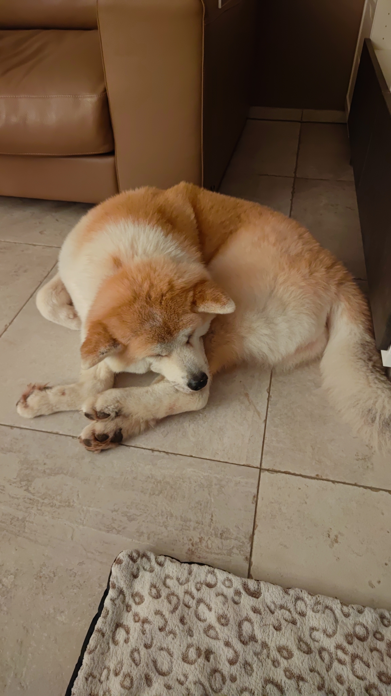
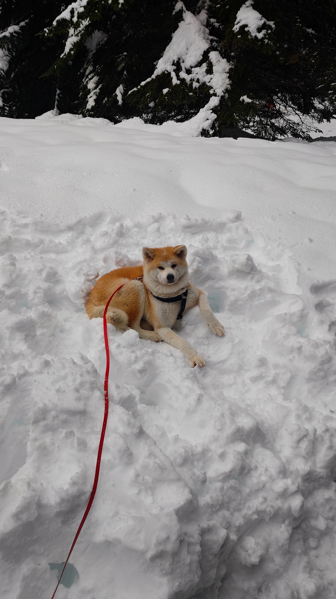
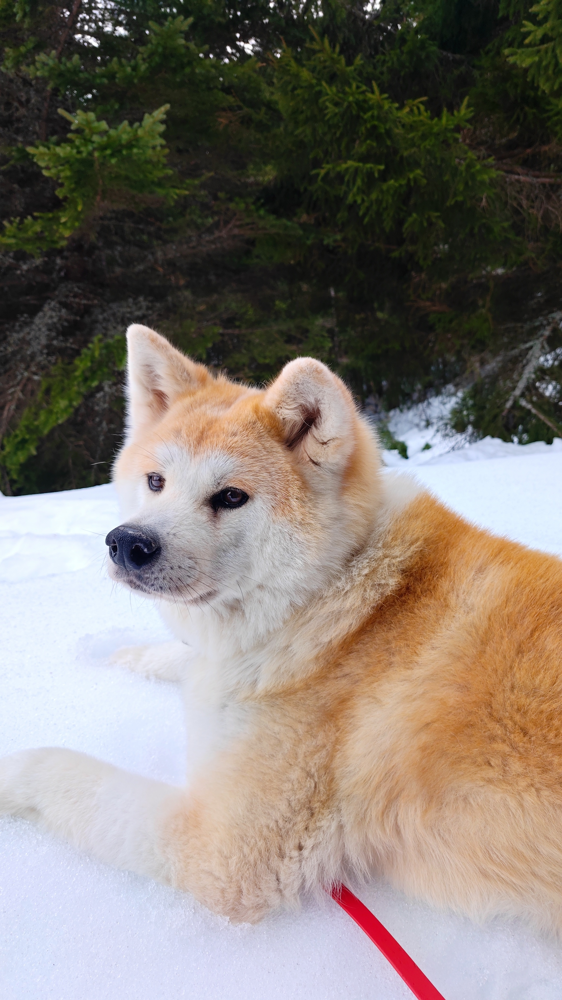
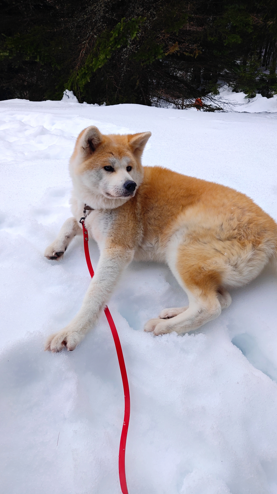
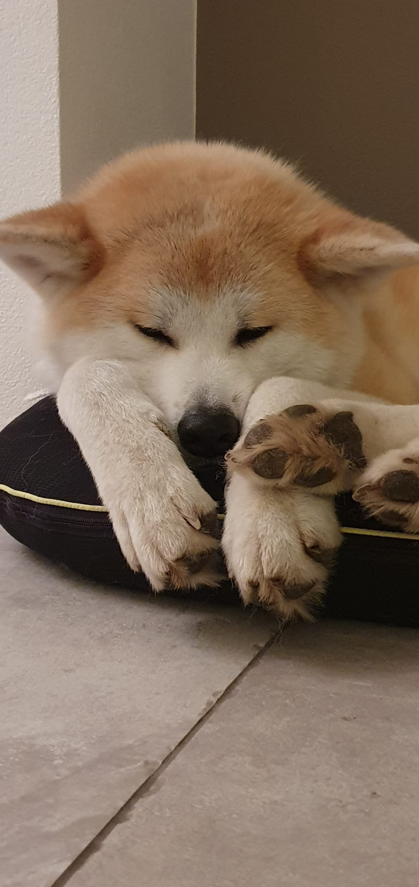
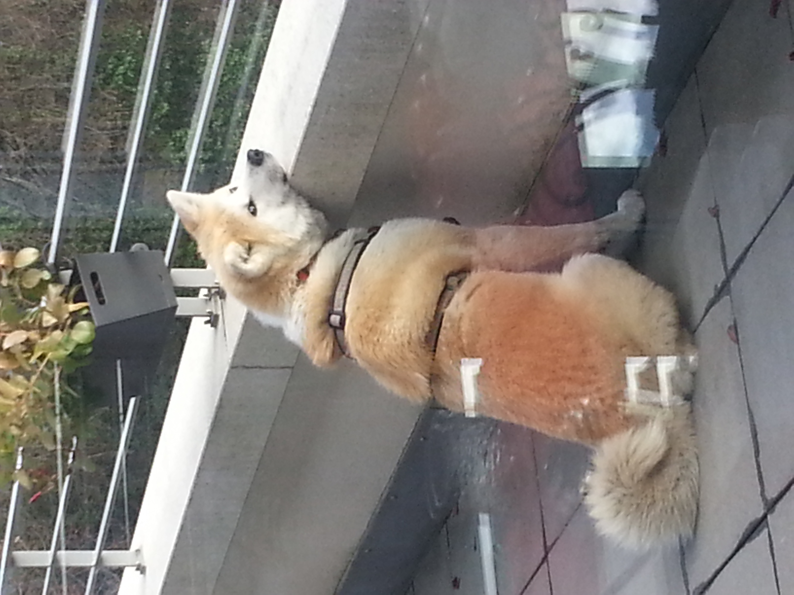

Mon Chien
Cette page seras dédié à mon chien
Benjamin Rossetti || Apprenti Informaticien
Cette page seras dédié à mon chien
Mon chien est de la s'appelle Mitsuko et est de race Akita-inu. Elle fête ses 10 ans cette année
L'Akita-inu est une race de chien originaire du japon, de la préfecture de Akita, d'où viens son nom.
A l'origine, c'était des chiens de chasse de gros gibier, comme l'ours et le sanglier.
L'Akita-inu, au fil du temps, est devenu réputé pour sa loyauté et son courage dans la culture Japonaise, ceci en partie avec l'histoire du célèbre Hachiko, connu pour avoir attendu son maître chaque jour à la gare de Shibuya, même après sa mort.
Suite à la seconde guerre mondiale, la race a faillie disparaître, mais grâce à des élevage, elle a réussi à être présérvée.
De nos jour, cette race est reconnue dans le monde entier pour sa capacité à rester calme, indépendant et proche de son maître.
Mistsuko est une chienne extrêmement calme, presque trop :), mais on l'aime bien. Elle ne fait pas grand chose de ses journée, il faut l'admettre.
Le seul problème est qu'elle a eu pas mal de problème de santé, notemment gastrique. Mais bon, il faut faire avec






Source: ChatGPT, W3School, Hostinger
Note: Ce site web a été codé par moi même avec l'aide de l'IA.
Mais aucun code n'a été copié-collé.
Je me suis aussi inspiré du site Web de Hostinger pour le style de ma page.
Ce site sera mis à jour de temps en temps selon ma situation.
PS: Merci d'avoir consacré du temps à lire mon histoire :)